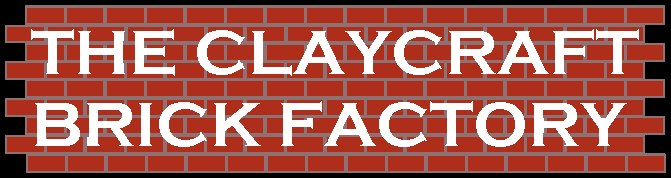
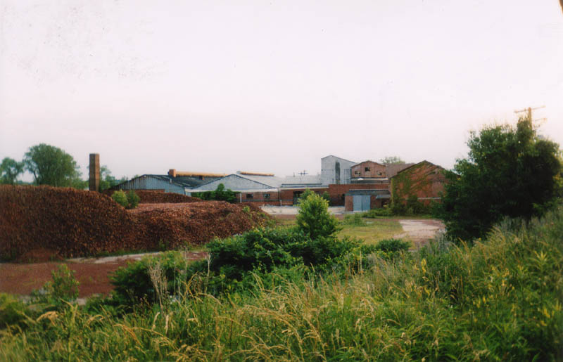
In the midst of a thriving industrial zone on Columbus's east side, the ruined Claycraft Brick Factory sprawls as a reminder of an earlier period in the neighborhood's history. Today you'll find the headquarters of a lot of corporate entities here, including Donatos Pizza. But years ago the primary business done here was manufacturing. This plant on Claycraft Road once turned bricks out by the truckload.
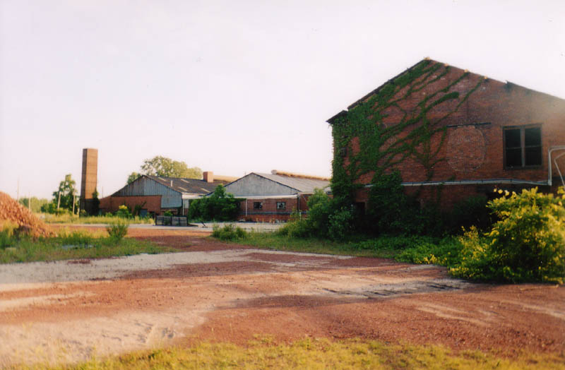
Today the factory itself is little more than a pile of bricks. Loose bricks are piled waist-high all over the brick-paved courtyard. Inside, pallets weighted down with bricks wait to go out on a final shipment that never came.
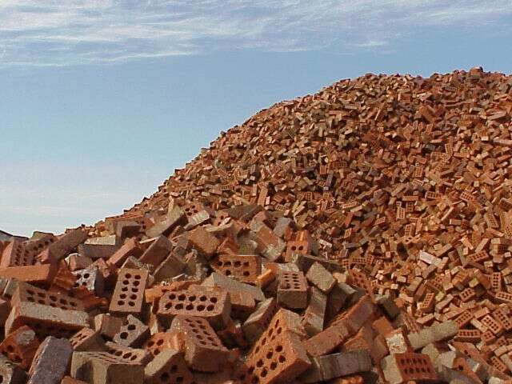
Even the bricks in the walls are crumbling. The Claycraft plant resembles nothing so much as the bombed-out shell of a factory.
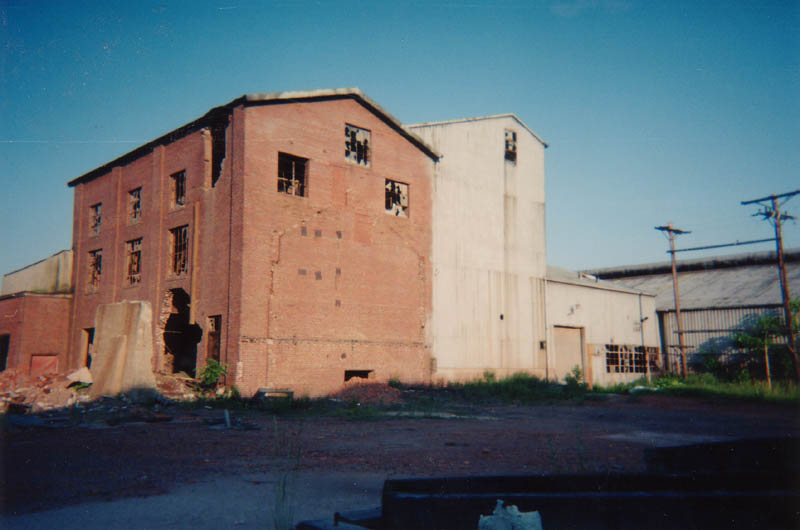
My friend Erik and I discovered the Claycraft Brick Factory in the summer of 2002 after I'd been told about it and directed there by a website contact. It's pretty well hidden, even though it's a stone's throw from I-270. In the daytime people swarm the area, going to work at the industrial centers, corporate headquarters, and warehouses on and around Taylor Station Road, but at night and on the weekends the whole neighborhood becomes a ghost town. A car passing by on the road is a rare occurrence late at night.
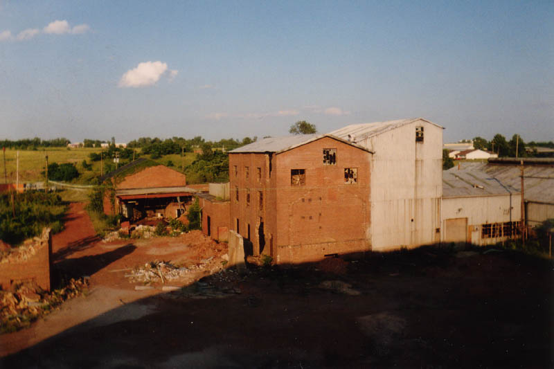
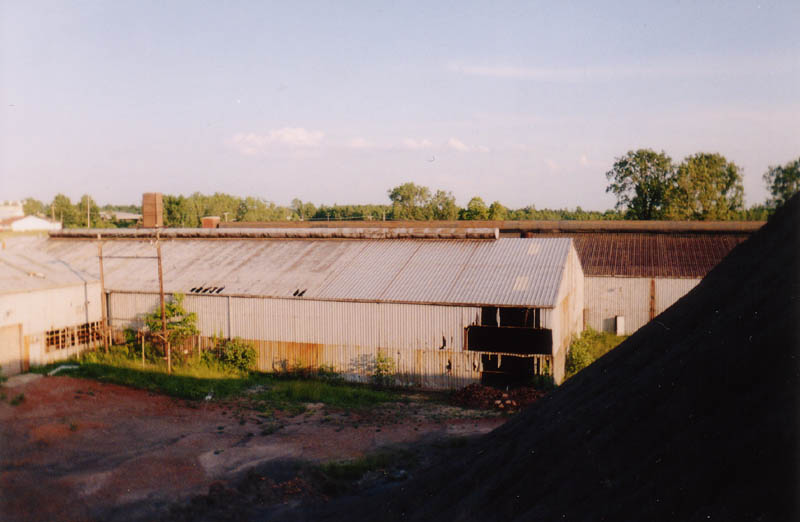
One section of the factory building is tall, filled with twisted, tangled catwalks. The other half is extremely long, with a high tin roof and skylights that glow eerily at night. It would be a great place to have a rave, but if you have one here and get busted, don't tell them I said that.
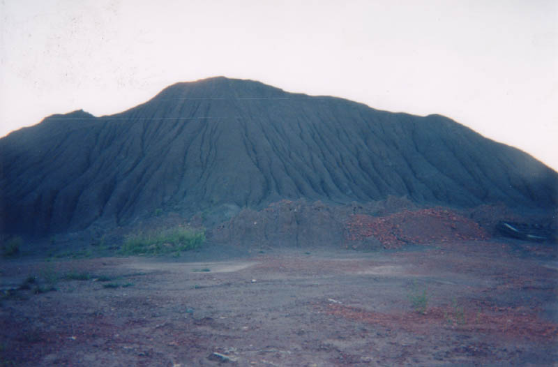
Behind the factory there is a huge mountain of black dirt that I'm guessing was somehow used in the making of bricks. Maybe they used it as raw material. It's been undisturbed so long that it's pretty well packed and not at all the sort of thing that could suck you down inside to suffocate, and it's actually quite fun and challenging to climb. A good sense of balance is essential for reaching the top. Once you're there you'll find yourself at roughly roof level.
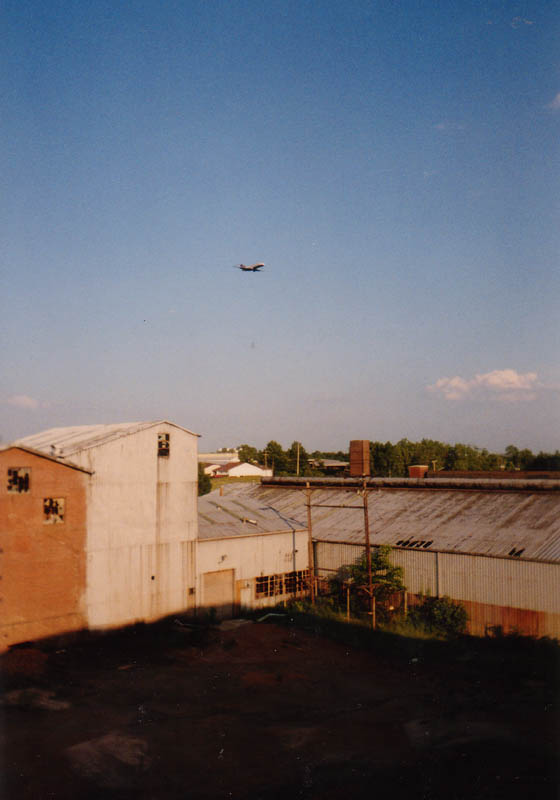
Airplanes pass low over the Claycraft plant on their way to and from Port Columbus, as you can see in the photo above. Another weird thing about the location of the factory is the fact that it's situated at the edge of a little swamp--a mucky pond covered with lilypads and festooned with cat tails and pungent water weeds. The city has an unmanned natural gas station near the building for the collection of methane from the swamp. The sound of its pounding motors and the presence of a junked pickup truck inside the fence make it seem like someone is there, but don't be scared off.
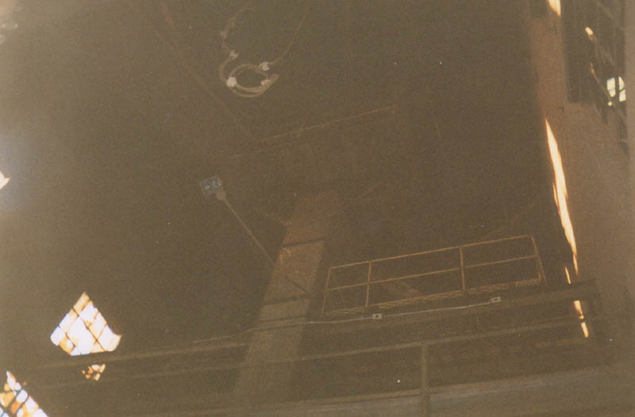
Inside the main building you might want to explore the catwalks, but you're not going to be able to. The owners or caretakers of the building were careful to remove all access to the higher levels in the tall building, even going so far as to rip entire pieces of scaffolding down. I'm not sure it would be smart to go up there at this point anyway.
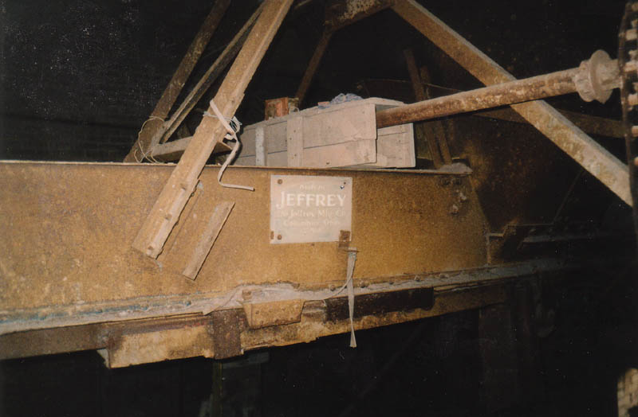
Interesting to note that this part of the metalwork inside the factory was manufactured by the Jeffrey Company, whose very old building on Fourth Street is a Columbus landmark.
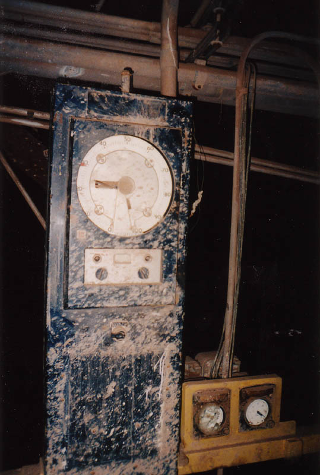
Various meters and gauges were left inside. This picture shows a temperature gauge attached to one of the brick ovens. Below, you can see the entrances to the ovens themselves.
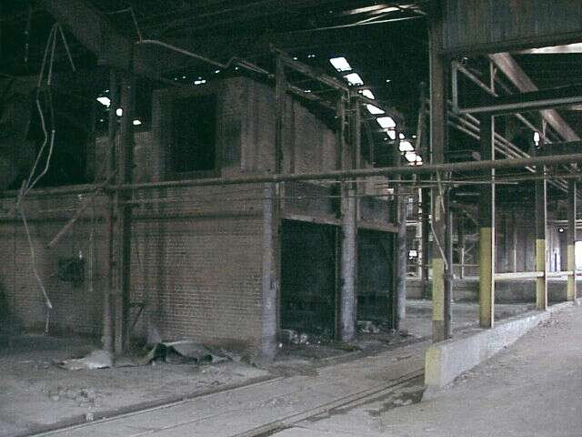
The ovens are a lot like caves. They're open only at one end, and they're at least a hundred feet deep--the entire length of this half of the building. Walking deeper and deeper into one you come across nastier and nastier stuff: filthy piles of gunk, black puddles of brackish water. There are tracks set into the floor of the ovens, on which I'm assuming carts of some kind once carried bricks. The ovens are so long that they divide one strip of the building off from the rest.
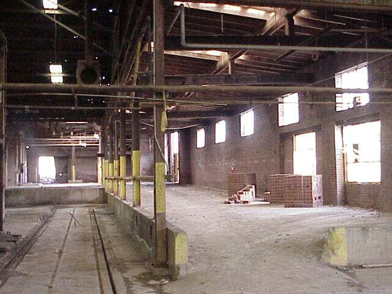
Similar tracks run all over the building. This makes sense; bricks, as you may have noticed, are heavy, and it stands to reason that they moved them on carts. The part of the building pictured above is sunken lower than the rest of the main floor, which means it floods quite a bit, but when the water is down you can see the many sets of cart tracks crisscrossing the floor.
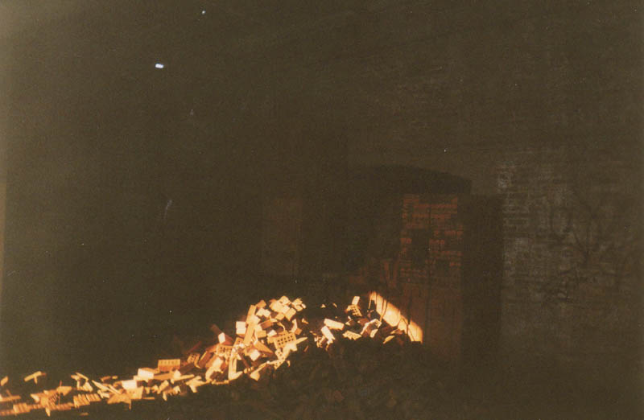
And then there are the last bricks the Claycraft factory ever produced, which are piled all throughout the building as well as outside. They make walking pretty treacherous without a flashlight. In some places there are neat geometric cubes of brand new bricks, stacked on pallets and strapped in place with metal bands. Vandals have begun to make dents, though, and many of the stacked cubes are halfway kicked apart.
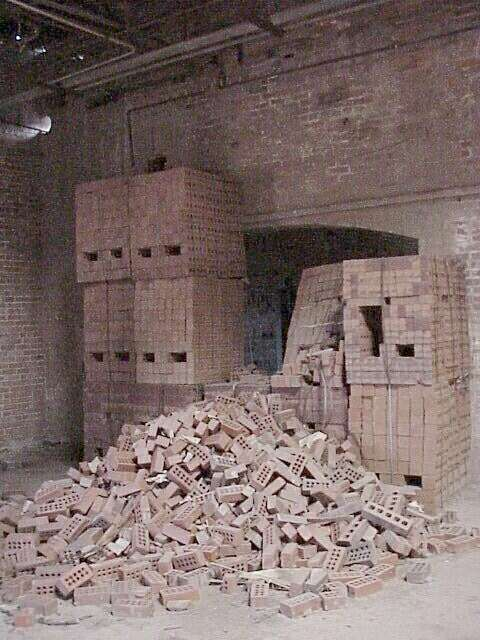
In the long portion of the factory which houses the ovens there is a small set of offices built in the middle of the floor. They're mostly bare. It's easy to imagine how incredibly hot it must have been in here when the ovens were going on a summer day.
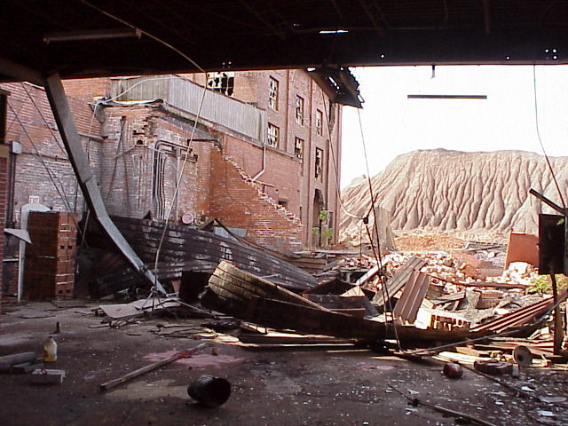
The toilets in the office section looked like they'd been whacked apart with a sledgehammer for no good reason. Vandalism, I suppose.
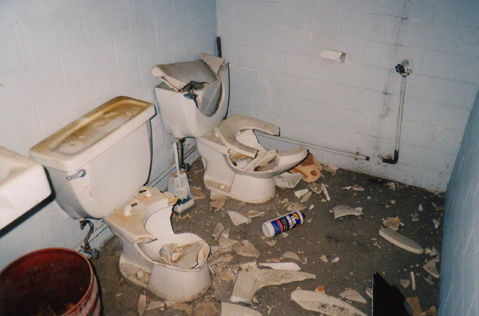
Obviously I don't have much information about the specific history and workings of this abandoned factory, so if you know anything about it, please send me an e-mail. If you'd like to visit it, you can find it on Claycraft Road in Gahanna, near Taylor Station Road, which is off East Broad Street and I-270. The best way to reach it is to drive around behind the office buildings next door and take the rutted gravel path. (Warning: if you have a car with low ground clearance, the foot-high grass between the tracks will scrub your exhaust pretty hard.) Park near the methane pumping station and walk right in. With the number of holes in the walls it would be impossible for them to seal this place up.
My friend Erik, with whom I first located the Claycraft Brick Factory, passed away on May 2, 2003. To read more about him, click here.
UPDATE: The Claycraft factory is no more. They plowed it flat sometime in late 2003 and replaced it with a brand new factory much the same shape and size. So the opportunity to explore this one is, unfortunately, past.
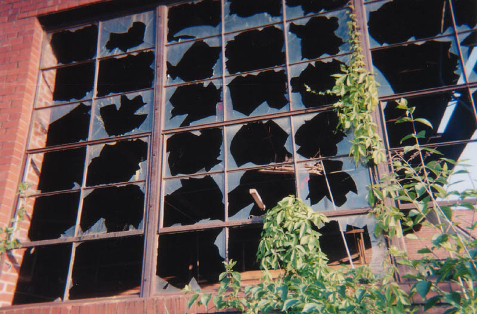
Back